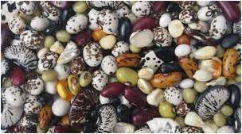
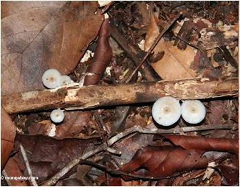
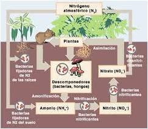
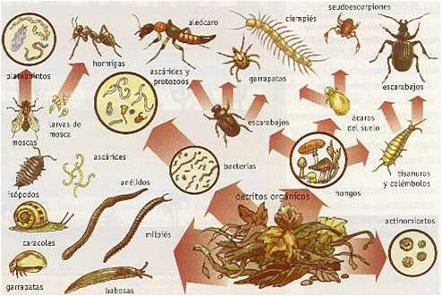
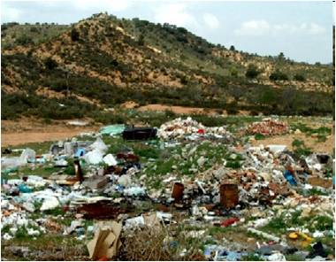
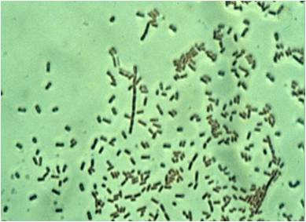
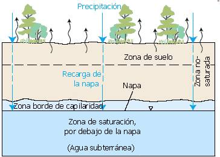
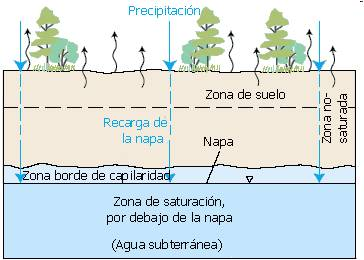

Al suelo se le reconocen importantes funciones ambientales tales como:
Producción biológica
El suelo es el lugar donde se desarrollan las plantas terrestres y sus características de fertilidad influyen en la producción de los cultivos que consume el hombre, así como de las plantas que consumen otros seres vivos.
Banco de semillas
El suelo alberga semillas y otros propágulos vegetativos (raíces y otros restos de plantas) que constituyen una fuente para la colonización de áreas afectadas por la actividad humana y eventos catastróficos naturales.
Descomposición de materia orgánica y ciclaje de nutrientes
Así como el proceso de producción biológica es importante para el mantenimiento de la vida, también lo es el proceso inverso de descomposición de la materia orgánica, ya que retorna al suelo los nutrientes requeridos para la producción de nueva materia orgánica. El suelo es el hábitat de una variedad de organismos con capacidad de descomponer la materia orgánica, entre los cuales destacan bacterias, hongos, actinomicetos y pequeños invertebrados.
 Hábitat para la biota
El suelo es parte de los ecosistemas terrestres, pero a su vez es un ecosistema, ya que en él habita una comunidad biológica constituida por las raíces de las plantas, invertebrados, algas, líquenes, hongos, microorganismos, invertebrados y pequeños vertebrados, que se interrelacionan entre si, formando una compleja trama trófica
Filtro ambiental
El suelo es el sitio de disposición de una gran variedad de desechos, los cuales pueden ser degradados, transformados o estabilizados por la microbiota del suelo y diferentes procesos físicos, químicos y bioquímicos que ocurren dentro de él. Gracias a esta capacidad se reduce la carga de contaminantes y los daños por exposición a sustancias nocivas.
 Almacenamiento de agua
Las plantas aprovechan principalmente el agua que se encuentra almacenada en los poros del suelo. Esta agua tambien hidrata a la microflora y a la fauna del suelo y solubiliza los nutrimentos indispensables para su crecimiento.
 

- «
- »